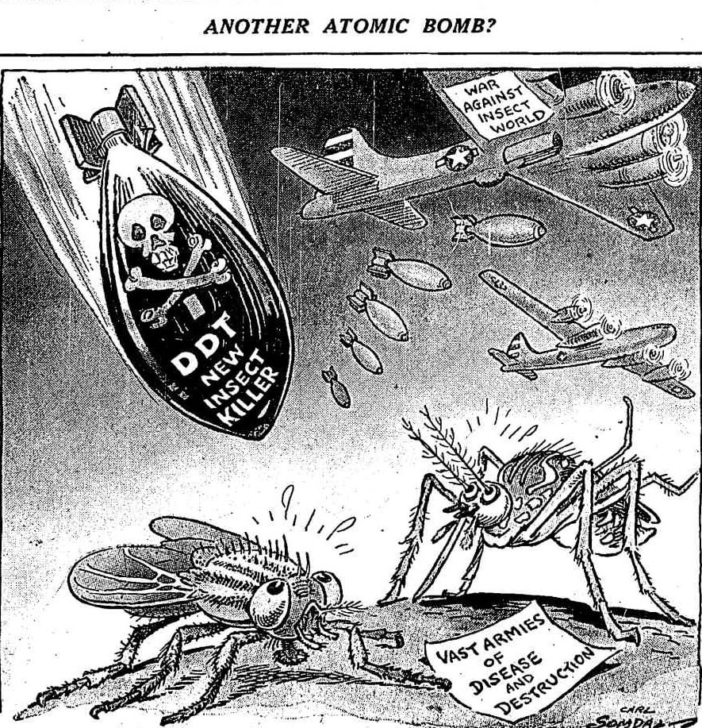

Atop a black horse, the third horseman embodies famine, weighing a scale which raises the price of bread. Famines have long been associated with plagues of locusts, devouring fields of wheat in massive swarms — and giving a sense of irony to associating famine with the first modern insecticide, DDT.
Dichloro-diphenyl-trichloroethane, in short DDT, is a synthetic compound which was found to be effective at killing insects. The pioneer of the chemical, Paul Hermann Müller, would go on to receive a Nobel Prize for Physiology or Medicine in 1948 owing to his experimentation with it. Previous pesticides, containing chemicals toxic to humans, bore with them an awful reputation, and this made DDT all the more popular as a reportedly harmless insect spray. Unfortunately, while it was true that the effects on humans were minor, the same did not extend to animals.
Neither Muller nor the companies selling DDT by the gallon had the ability nor patience to test it on a large scale. The quantities at which DDT was being sprayed would lead to the death of not just insects, but many other animals. DDT accumulation in the soil would result in runoff leading to rivers and lakes, where it was found to be highly toxic to fish. Birds feeding off DDT-laden insects would struggle to reproduce as it thinned eggshells and caused young to die — in a particularly notable United States study, the bald eagle population was hit hard by DDT as they fed off poisoned animals.
Although it is banned in United States agriculture, DDT still sees use elsewhere, particularly where mosquitoes are prevalent. While its usage now is slim, and its symptoms to humans may seem minor compared to other banned substances, its effects on the food chain could lead to devastating famine if not curtailed.